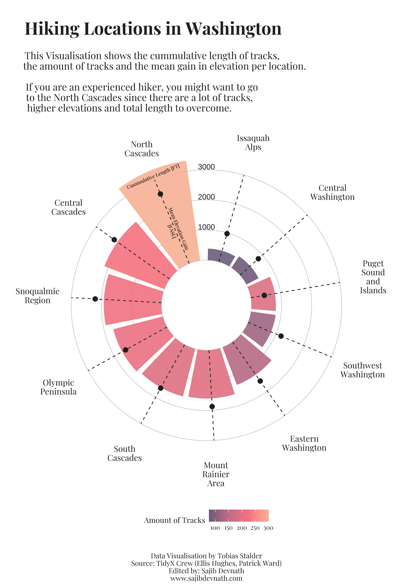

Load the libraries:
Font:
Loading the data:
hike_data <- readr::read_rds(url('https://raw.githubusercontent.com/rfordatascience/tidytuesday/master/data/2020/2020-11-24/hike_data.rds'))Data manipulation:
Extract regions:
word(hike_data$location, 1, sep = " -- ") -> hike_data$region
hike_data$region <- as.factor(hike_data$region)Extract miles:
Converting data types
Calculate cummulative length, mean(gain)
Data Visualization:
Color choice:
## <colors>
## #6C5B7BFF #C06C84FF #F67280FF #F8B195FFshowtext_auto()
summary_stats$region <- forcats::fct_reorder(str_wrap(summary_stats$region, 5), summary_stats$sum_length)
plot <- ggplot(summary_stats) +
# custom panel grid
geom_hline(yintercept = 0, color = "lightgrey") +
geom_hline(yintercept = 1000, color = "lightgrey") +
geom_hline(yintercept = 2000, color = "lightgrey") +
geom_hline(yintercept = 3000, color = "lightgrey") +
geom_col(aes(
x = region, #is numeric
y = sum_length, #is numeric
fill = count), #is a factor
position = "dodge2",
show.legend = TRUE,
alpha = .9,
) +
scale_fill_gradientn("Amount of Tracks",
colours = c( "#6C5B7B","#C06C84","#F67280","#F8B195")) +
# mean gains per rigion
geom_point(aes(x = region,
y = mean_gain),
size = 3,
color = "gray12") +
geom_segment(aes(
x = region,
y = 0,
xend = region,
yend = 3000
),
linetype = "dashed",
color = "grey12") +
annotate(
x = 11,
y = 3130,
label = "Cummulative Length [FT]",
geom = "text",
size = 2.5,
angle = 23,
family = "playfair"
) +
annotate(
x = 11,
y = 1200,
label = "Mean Elevation Gain\n[FASL]",
geom = "text",
size = 2.5,
angle = -67.5,
family = "playfair"
) +
#annotate custom scale inside plot
annotate(x = 11.7, y =1100, label = "1000", geom = "text", color = "gray12", family = "")+
annotate(x = 11.7, y =2100, label = "2000", geom = "text", color = "gray12", family = "")+
annotate(x = 11.7, y =3100, label = "3000", geom = "text", color = "gray12", family = "") +
scale_y_continuous(limits = c(-1500, 3500),
expand = c(0,0),
breaks = c(0, 1000, 2000, 3000)) +
#add title, subtitle & caption
labs(title = "\nHiking Locations in Washington",
subtitle = paste("\nThis Visualisation shows the cummulative length of tracks,",
"the amount of tracks and the mean gain in elevation per location.\n",
"If you are an experienced hiker, you might want to go",
"to the North Cascades since there are a lot of tracks,",
"higher elevations and total length to overcome.",
sep = "\n"),
caption = "\n\nData Visualisation by Tobias Stalder\nSource: TidyX Crew (Ellis Hughes, Patrick Ward)\nEdited by: Sajib Devnath\nwww.sajibdevnath.com") +
#transform to polar coordinate system
coord_polar(clip = "off") +
theme(
legend.position = "bottom",
axis.title = element_blank(),
axis.ticks = element_blank(),
axis.text.y = element_blank(),
axis.text.x = element_text(
color = "gray12",
size = 12
),
panel.background = element_rect(
fill = "white",
color = "white"
),
panel.grid = element_blank(),
panel.grid.major.x = element_blank(),
text = element_text(
family = "playfair",
color = "grey12"
),
plot.title = element_text(
face = "bold",
size = 25,
hjust = 0.05),
plot.subtitle = element_text(
size = 14,
hjust = 0.05),
plot.caption = element_text(
size = 10,
hjust = .5)
) 
Saving the plot:
ggsave(
path = here::here("output"),
filename = "1.pdf",
width = 8.25,
height = 11.75,
units = "in",
dpi = 300
)Original Chart source: Tobias Stalder